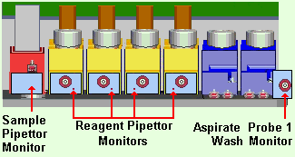
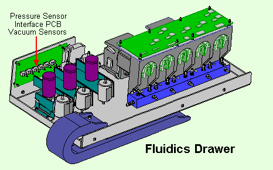
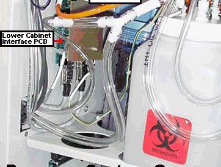

Process Monitoring - Pressure Checking Operating Principles
Purpose
This document provides an overview of the pressure check portion of process monitoring.
Location
The pressure monitors are located in three areas of the instrument:
- Sample pipettor monitor - Front of the sample pump.
- Reagent pipettor 1, 2, 3, and 4 monitors - Front of the precision pumps.
- Aspirate probe 1 wash monitor - Right front of right wash pump.
- Vacuum Pressure - Pressure Sensor Interface PCB in fluidics drawer (five wash towers and Asp. 1 manifold).
- Compressor Pressure - Lower Cabinet Interface PCB.
Overview
The main details of process pressure monitoring are:
- Includes positive and negative pressure checking.
- Is active during the processing of all assays.
- Is used to detect abnormal pressure in specific areas of the fluidics system.
- If pressure becomes too high or low for what is expected, then an event message is generated.
- A sample that is being processed in the area where the process monitoring error is generated, is flagged.
- Errors of the vacuum on the aspirate probe 1 wash manifold are not flagged because they do not relate directly to a specific sample in the wash carousel.
Component Locations



Component Functions
| Part | Function |
|---|---|
| Sensor, Fluid Pressure | An electromechanical device that converts fluid pressure into an electrical signal. These sensors are located directly in the fluid line from the pump to the fluid destination. |
| Sensor, Air Pressure | An electromechanical device that converts air pressure into an electrical signal. This sensor is not directly in the pressure line, but is in a dead end branch of the pressure line. |
| Sensor, Vacuum | An electromechanical device that converts vacuum pressure into an electrical signal. These sensors are not directly in the vacuum line, but are in a dead end branch of the vacuum lines. |
Process Monitoring Pressure Checks for One Sample
| Device | Vacuum Monitor | Aspirations | Dispenses |
|---|---|---|---|
| Sample Pipettor Wash Tower | One | NA | One |
| Sample Pipettor | NA | Up to 15 | One |
| Reagent Pipettor Wash Tower | Up to seven | NA | Maximum of four for a single-step assay
Maximum of eight for a two-step assay |
| Reagent Pipettor | NA | Up to 12 | Up to seven |
| Aspirate Probe 1 Wash Manifold | Once before piercing duck-bill valve,
Low limit only |
NA | NA |
| Aspirate Probe 1 | NA | One per wash | Flush = One |
| Substrate Dispense | NA | NA | One |
| Reagent Pack | NA | None | Maximum of four for a single-step assay
Maximum of eight for a two-step assay |
Interacting Devices
Pressure monitoring sensors interact with these components:
- DAQC PCB
- Sensor Interface PCBs
- Fluids
- Vacuum system
- Compressed air aystem